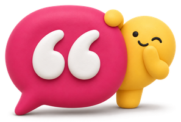
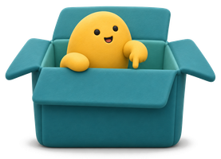
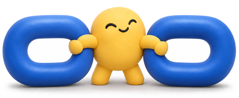
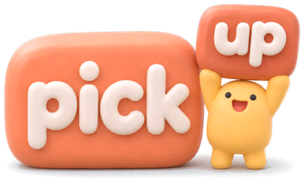
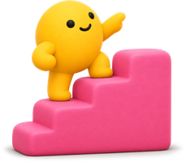
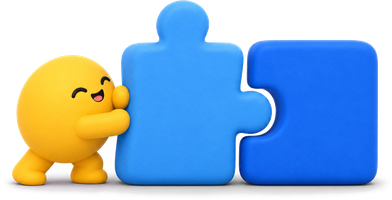
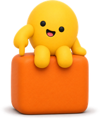

john
plus
english
Games
5

Idiom Game

Preposition Game
Article Game

Linkers Game

Phrasal Verb Game
Tests
3

English Level Test

Phrasal Verb Test

Prepositions Test
Handouts
Guides and practice
Idioms
Guide
Practice
Idioms
Proverbs
Similes
Prepositions
Guide
Practice
B1
B2
C1
C2
Articles
Guide
Practice
B1
B2
C1
C2
Linkers
Guide
Practice
B1
B2
C1
C2
Phrasal Verbs
Guide
Practice
B1
B2
C1
C2
Vocabulary
9 word rooms
Rome Flat
The Office
The Gym
The Shop
The High Street
The School
The House
The Hospital
The Airport
The Hotel
The Restaurant
The Car
Instagram
Telegram
Buy me a coffee
Off limits
Wrong password, try again.
Enter